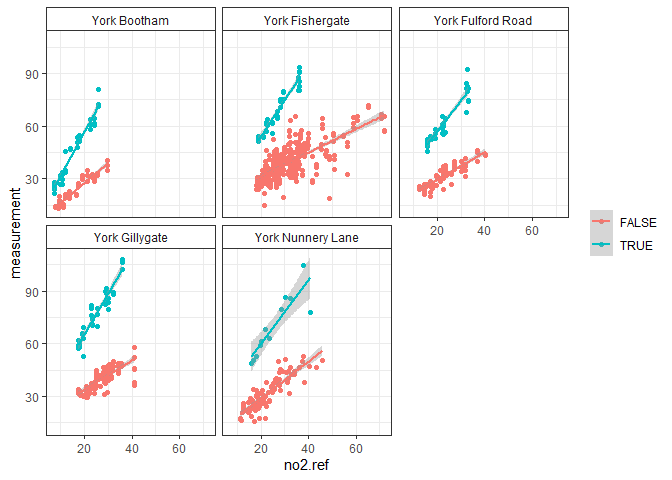

R code for Diffusion Tube Data Evaluation.
DTEval is a package of R code used for the pro-processing, analysis and evaluation of diffusion tube (DT) data typically collected in air quality assessment exercises.
Get developer’s version of DTEval from GitHub (archive) [currently PRIVATE]:
# (if you do not have remotes package, install it from CRAN)
# install.packages("remotes")
remotes::install_github("karlropkins/DTEval") If you have the DTEval .tar.gz file:
# install.packages("remotes")
remotes::install_local(file.choose()) # and select
require(DTEval)
#> Loading required package: DTEval
#AURN sites: YK10-11
#AQE sites: YK7-9, YK13, YK15-16
#(using openair and dplyr)
ref.york <- dplyr::bind_rows(
openair::importAURN(c("YK10", "YK11"), year=2005:2023, meta=TRUE),
openair::importAQE(c("YK7", "YK8", "YK9", "YK13", "YK15", "YK16"),
year=2005:2023, meta=TRUE)
)
#DT data packaged as dt.york
#source City of York Council / York Open Data
#https://data.yorkopendata.org/dataset/diffusion-tubes-data
#(downloaded 2024-12-02)
testTubeAccuracy(dt.york, ref.york,
tube="measurement", ref="no2",
facet="site.ref",
group="CalendarYear==2017")
#> 'measurement' vs. 'no2.ref' (dist < 10):
#> |FALSE|York Bootham| 4.753 + 1.136*[ref] (adj.r^2 0.9112)
#> |TRUE|York Bootham| 6.451 + 2.503*[ref] (adj.r^2 0.9445)
#> |FALSE|York Fishergate| 17.78 + 0.6738*[ref] (adj.r^2 0.5272)
#> |TRUE|York Fishergate| 12.5 + 2.065*[ref] (adj.r^2 0.9148)
#> |FALSE|York Nunnery Lane| 7.663 + 1.053*[ref] (adj.r^2 0.7568)
#> |TRUE|York Nunnery Lane| 23.42 + 1.817*[ref] (adj.r^2 0.7588)
#> |FALSE|York Fulford Road| 13.39 + 0.7908*[ref] (adj.r^2 0.7613)
#> |TRUE|York Fulford Road| 21.22 + 1.77*[ref] (adj.r^2 0.8772)
#> |FALSE|York Gillygate| 17.3 + 0.8247*[ref] (adj.r^2 0.5822)
#> |TRUE|York Gillygate| 19.03 + 2.314*[ref] (adj.r^2 0.8845)(not keeping this example BUT maybe wrong units in 2017?)